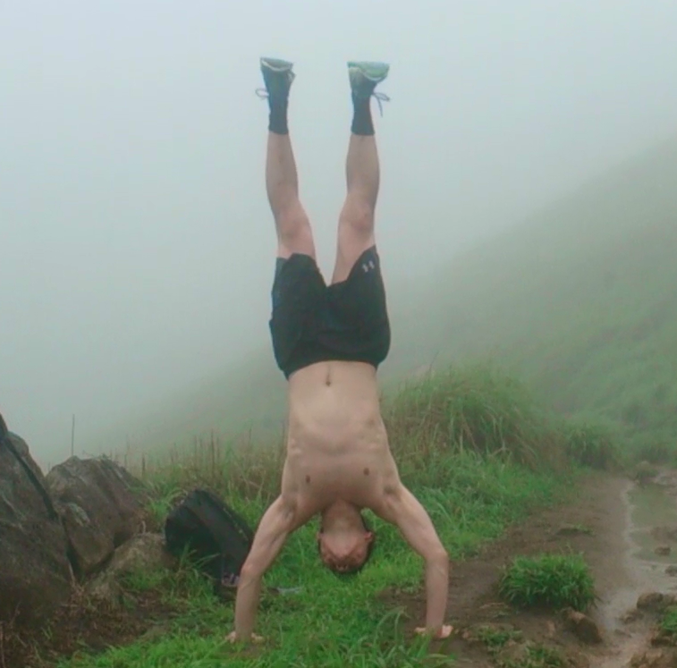

Angus Wong
Experience Enthusiast
Current level: Web Developer
Hi there! Welcome to a page all about me. I label myself an experience enthusiast because no matter the experience, it always generates excitement within me. New experiences are especially potent; especially right now, with coding!

Finding my passion
Throughout my time working in pedantic yet initially messy environments, I have developed a passion for ultimate efficiency, no matter what field of life I find myself in. Subjecting myself in multiple cultures and environments, my passion has developed to include being able to as seamlessly as possible integrate and adapt, whether it be between different different cultures, business structures, or ---
Experience and Knowledge
Inspiration comes in many forms and sizes; the lightest of words could create the heaviest effects. The desire to create change, improve life, end suffering, and anything else far wide and in between, is all a consequence of experiecing or viewing the experience of a situation where a change would modify a situation for the better. Thus, a primary importance of inspiration is that exposure is unlimited, much further reaching than ignorance.

Chase perfection
Perfection is an anomaly. Theoretically speaking, perfection exists. Realistically speaking, it is impossible to achieve. However, that does not mean one should not seek to achieve such a state in their pursuits. The journey towards perfection is an infinite, often repeating similar actions or thoughts, but fulfilling path. Continuous self reflection and being open to criticism opens the path to self improvement, and therein exists the true meaning of enlightenment. "I would rather practice one kick ten thousand times, than ten thousand kicks a single time."
